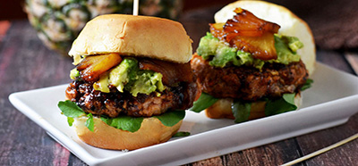
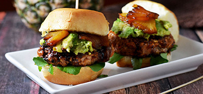
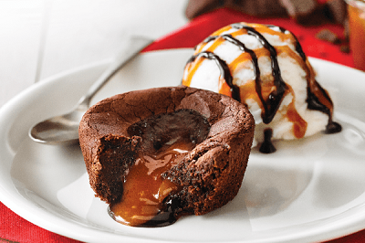

Here is our menu
Within the menu you will find a selection of well known, and lesser known dishes. They are carefully chosen to give you the best foodexperience possible. All of the allergens the dishes might contain is listed down at the bottom of the page. You can compare the numbers with the ones written on the dish to look up what allergens the dish contains.
Starters
These dishes are designed for those of you who does not feek the hunger eat you up, but still want to have a taste from our excellent kitchen. The starters may also be bought as extras beside your main dish.
 

Signature breakfast
Egg and bacon made from the nearby areas. Served with homemade break and potatosalad.
- 79kr
1, 3, 5, 10, 11
Garlic bread
To pieces of bread with homemade garlic butter. Choose between having the butter on the side or baked into the bread - 59kr
3, 5, 10
Wrap
Beef- or chicken-wrap filled with a variety of vegetables, mangosalad and red chili. Topped off with our own sour cream sauce
- 69kr
4, 5, 10, 12
Mexican nacho
Nachochips covered by melted cheese. Served with our own sour cream sause, hot salsa and guacamole.
- 109kr
3, 4, 5, 10
Main course
Get ready to dive into an experience you won't forget that easy. All the dishes are made with commodities from the local areas. Made with love by people who have made these pieces of art. Leaving the table still hungry is easier said than done because of the shear perfection in the dish. Chose whatever you want, all of the dishes are absolutely fantastic.


The Fancy Pickle
Our spesiality. 320g with local beef grilled to perfection above coal. Served with commodities from Trondheim, and the most perfect pickle imported from Spain. Choose you kind of potato: creamed potatoes, boats, chips.
- 349kr
3, 4, 5, 10, 11
Bacon & Cheese
The classic. 160g beef served with slices of bacon, cheddar and BBQ-sauce. Choose you kind of potato: creamed potatoes, boats, chips.
- 179kr
3, 4, 5, 10, 11, 13
Big Fat Blue (BFB)
Our own blue-cheese delicacy. 200g beef served with your choice of extras by the side, and of course the blue-cheese on top. Choose you kind of potato: creamed potatoes, boats, chips.
- 249kr
3, 4, 5, 10, 11, 13
No shit please
The easiest burger on the menu. This one is for you who does not want extra vegetables and stuff on your burger, but who would rather have a plain experience. Why ruin a great burger right? It is served with beef (150g, 180g, 220g),
cheddat, tomato and heartsalad. Choose you kind of potato: creamed potatoes, boats, chips.
- 129kr
3, 4, 5, 10, 11
Dessert
After filling up with one of the best burgers in the world, it will be hard to know how much space there is left down there. If you do not want any more, the quality of our desserts is not the reason for it. Below you can find tasteful desserts which will make forget that you're full. Have a try.

Chocolate fondue
Have you ever dreamed about swimming in melted chocolate? Our chocolate fondue might look like an ordinary brownie, but when you slice it with your spoon, you will se hot liquid chocloate flow down you plate. This delicacy is served with
our homemade vanilla ice-cream and is tastes absolutely insane.
- 79kr
1, 2, 3, 5, 10
Banana split
The classic banana split. To bananas on each side of three balls of ice-cream with different flavours (or the same): chocolate, vanilla and strawberry. Served with cream and cherries.
- 99kr
1, 2, 3
Chocolate cake
Even though it might not be anyones birthday, there is always an occation to have a slice of a fantastic chocolate cake. Served with two balls of the ice-cream of your choice (chocolate, vanilla, pistachio, strawberry)
- 69kr
1, 2, 3, 5, 10
Fireball glory
Have a taste of this beauty. Our own cinnamon pastry baked with fireball (yes the drink). This is something you will never eat anywhere else. Served with two balls of the ice-cream of your choice (chocolate, vanilla, pistachio,
strawberry), AND one shot Fireball (0.4 cl)
- 159kr
1, 2, 3, 4, 5, 10
Drinks
One cannot simply eat fantastic food without a fantastic drink. The Fancy Pickle offers a wide variety of alcoholic and non-alcoholic drink to fit everyones taste. Be aware: we will check if you are old enough for the alcoholic drinks by checking your ID. If we believe that you are younger that 25 years old we will ask for your ID. If not stated otherwise, the drinks are 0.5l
Non-alcoholic
Coca cola - 59kr
Coca cola zero - 49kr
Coca cola light - 49kr
Sprite - 59kr
Fanta - 59kr
Farris - 49kr
Coffee - 39kr
Hot chocolate - 39
Apple juice - 39kr
Kuli - 29kr
Alcoholic
Dahls pilsner (0.4L) - 89kr
Aass fatøl (0.4L) - 95krkr
Ginger joes ingefærøl (0.33L) - 89kr
Red wine (1 glass) - 79kr
Red wine (1 bottle) - 399kr
White wine (1 glass) - 79kr
White wine (1 bottle) - 399kr
Cava (1 glass) - 89kr
Our exquisit champagne (1 glass) - 149kr
Ask the waiters if you do not find what you're looking for. We might just have it.
Extra information
If there is anything the waiters can do for you, just ask. They are paid and trained to make your experience at The Fancy Pickle the best possible. You can ask to contruct your own dish, although this might alter the price. We recommend choosing one of the predefined dishes when these are carefully contructed to give you the best food experience Tronheim offers.
Allergenlist:
- (1) Eggs |
- (2) Nuts |
- (3) Milk |
- (4) Soy |
- (5) Gluten |
- (6) Shellfish |
- (7) Citrusfruit |
- (8) Peanuts |
- (9) Barley |
- (10) Wheat |
- (11) Potato starch |
- (12) Celery |
- (13) Mustard